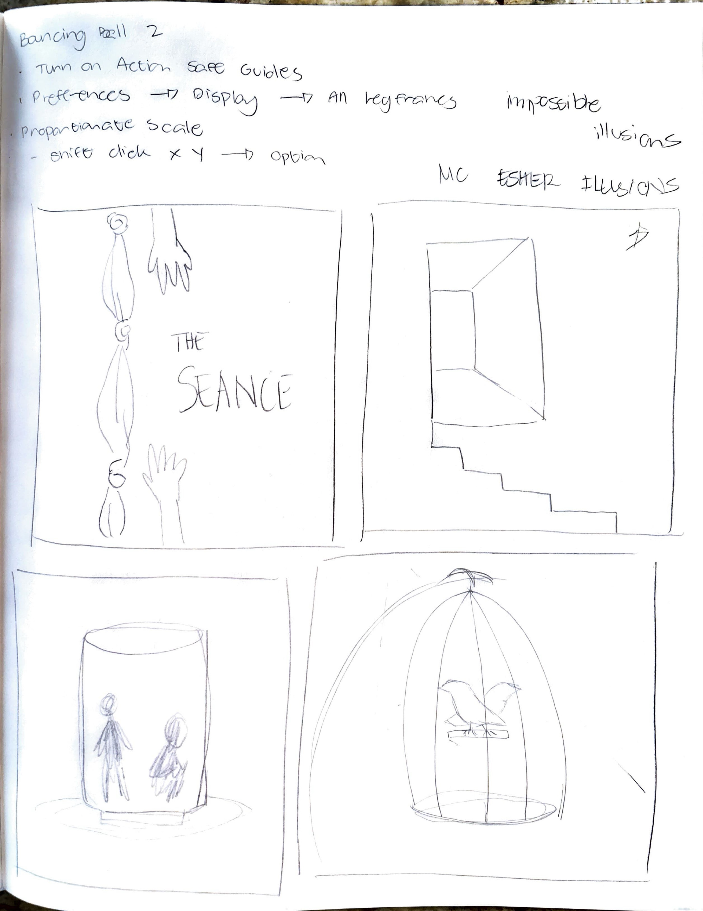
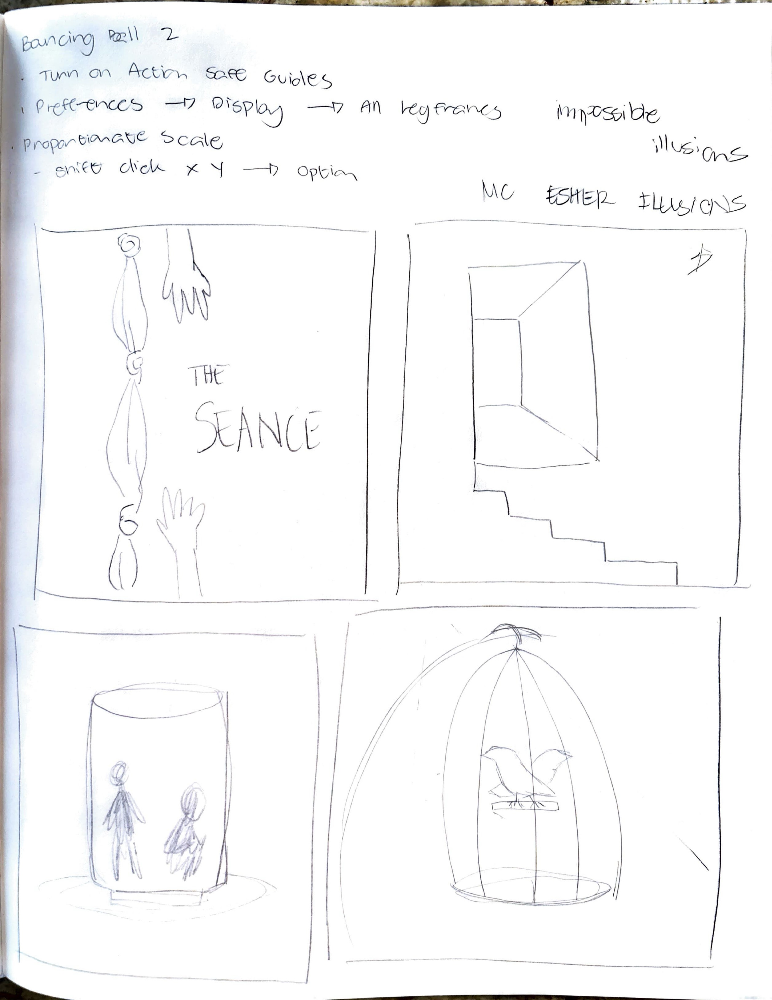
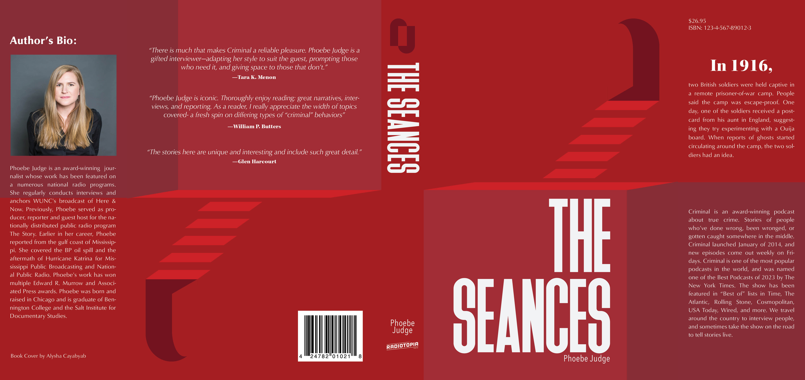

ABOUT THE BOOK COVERS
This project started out in my ART125 class with Emily Moody where we listen to the podcasts that were in our curriculum and we get to choose one to create a book cover for. Given the choice, I ultimately chose Phoebe Judge's Criminal podcast.
Personally, I have always been fascinated by true crime stories and the psychological aspects behind them. Criminal podcast stood out to me because of its unique storytelling approach and the way it delves into the human side of crime but at the same time has strange aspects towards the crime story that keeps you on the edge of you seat, anticipating what exacly happened.
The book covers I created were inspired by the stories told in the podcast. Each cover represents a different episode, capturing the essence of the narratives through visual elements and symbolism. The designs aim to evoke curiosity and intrigue, drawing readers into the complex and often unsettling world of true crime.
THE RESEARCH PROCESS

HOW I STARTED
In complete honesty, I didn’t know where to start because ideas either overwhelmed me or didn’t come at all. To overcome this, I re-listened to the episodes and took notes on key points, which helped clear my creative block and organize my thoughts before diving in.
At the end of my research, I usually have a list of key points and sentences that capture the episode’s main idea. The more, the better—so I can narrow down and choose the concept that best fits my vision.
FROM BRAIN TO PAPER
After choosing a concept, I quickly began sketching to match my ideas, though I often struggle with self-doubt. Once I have enough sketches, we present them to the class and teacher for feedback and voting. I worry that my visuals may not clearly convey my vision to others.
Even though some sketches weren’t my favorites, my classmates and teacher consistently offered valuable feedback that broadened my perspective. Their input encouraged me to revisit and refine my ideas until I arrived at a final design.
Through extensive exploration and sketching, I ultimately chose to focus on a single theme. I found that optical illusions best suited the overall atmosphere of the episodes I selected, as they evoke a sense of mystery and fascination that aligns with the supernatural and occult themes.
HOW IT CAME TO BE
Digitizing is my favorite design phase because choosing colors and typography brings the project to life. I enjoy experimenting to find what best fits the episode’s vibe, and despite the challenging choices, the goal of a finished design keeps me motivated.
During this process, I ask friends who know aesthetics but not design for feedback to see if my message comes across. If not, I revise my work. I also usually get constructive feedback from classmates and teachers to catch anything I might have missed during critique sessions.
THE RESEARCH GALLERY


 

